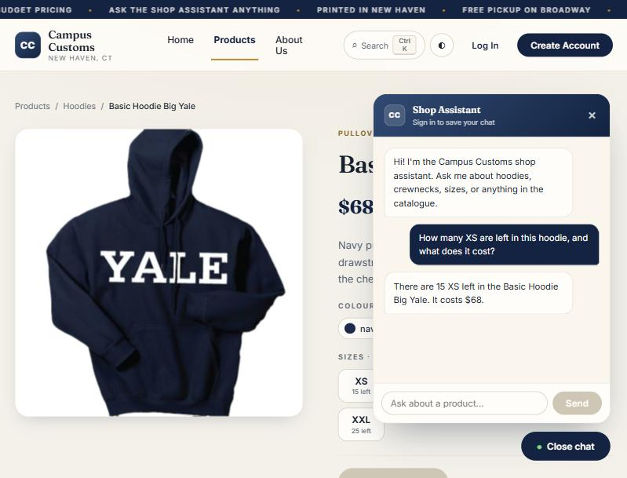
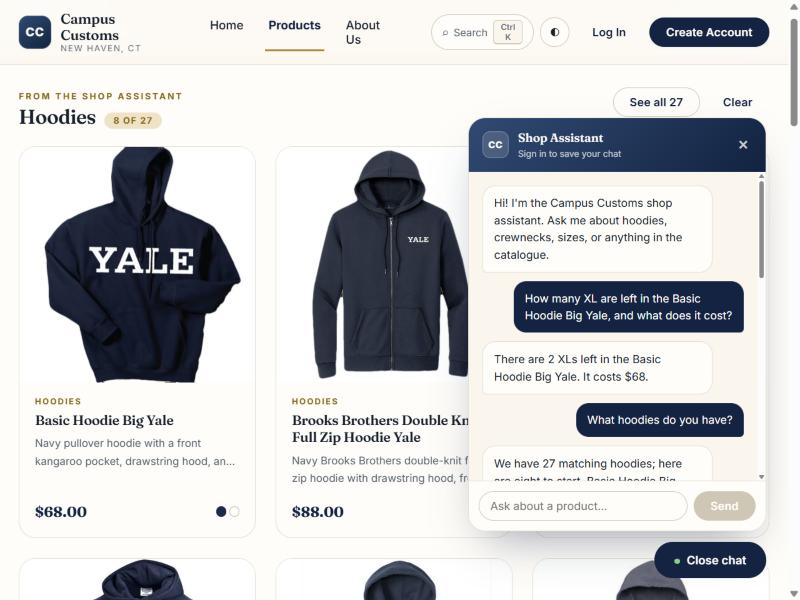
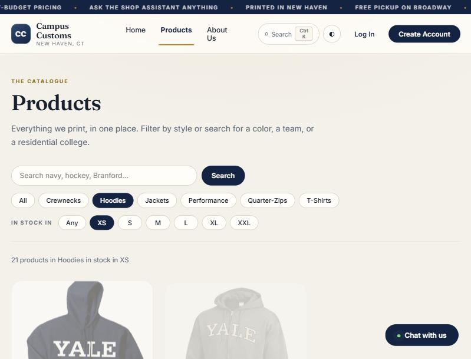

Problem 11
Campus Customs — live site check
Three checks run against the running app (frontend on :5173,
FastAPI backend on :8000, agent on gpt-6-luna).
Each screenshot below is an unedited capture of the live site.
1. The chat reports real stock and price from the database

Database row — basic-hoodie-big-yale: price 68.00 · XS 15 · S 5 · M 5 · L 8 · XL 2 · XXL 25
2. A category question makes product cards appear on the page

Verified — GET /api/products?search=hoodie returns 27 products; the band shows 8 of them.
3. Problem 9 usability feature: filter the catalogue by the size you wear

?size=XS&category=Hoodies), so it survives a refresh and can be shared.
Verified — all products 102 · size=XS 75 · size=XS + category=Hoodies 21